Celebrating fifty years of computer science
NCSU Computer Science Department Generative Logo
Date
August 2015
Project Details
Branding
Team
Allison Press + Lisa Wong
Objective
Design a new logo for the NC State University Computer Science Department in honor of their 50th anniversary
Pixel Power
The power of computer science lies beyond the flat pixels of a computer screen. It's a field that has continued to evolve at a swift pace over the past 50 years. Our logo captures this spirit of moving forward, and the endless potential of the field.
Our "50" logo references the flat pixels of a computer screen, while also symbolizing the depth and unseen power of the field. It pushes out of space and moves forward. The use of contrasting gradients creates an optical illusion in which the 50 appears to move in several directions - referencing a love for puzzles and problem-solving in State's computer science students.
- 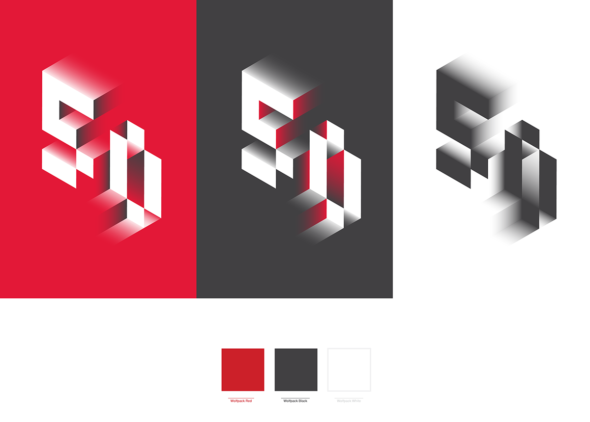
- 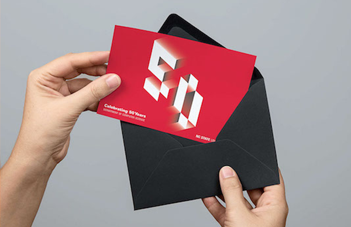
A Generative Mark
A 50th year anniversary is not only a celebration of the Computer Science Department's achievements, but also the achievements of its students. In addition to our mark's static form, we also created a website where students, alumni, and faculty can create their own personal, "50" logo that's based on their experience as a Computer Science student.
- 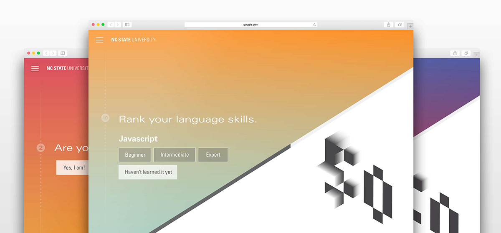
- 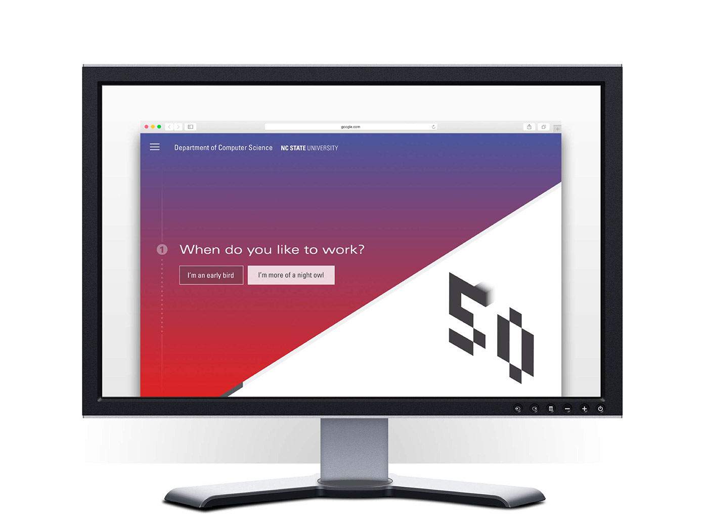
-
Step One - Starting the Quiz
The 50 begins as a flat mark. Once a student answers a question, the corresponding block on the 50 moves backwards or forwards, depending on their answer. In this case, being "more of a night owl" makes the first block move backwards.
- 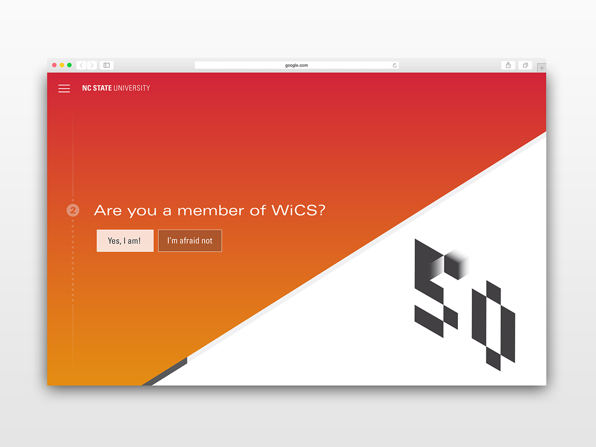
-
Step Two - Continue the Quiz
Users continue to answer short questions relating to their experience in the Computer Science program, and watch each block on the 50 reflect their answer.
- 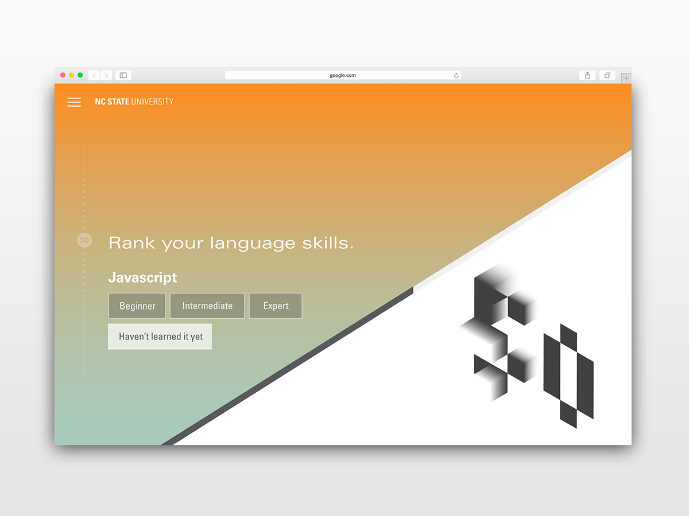
-
Step Three - Ranking language skills
The quiz also asks users to rank their expertise on several key computer science languages.
- 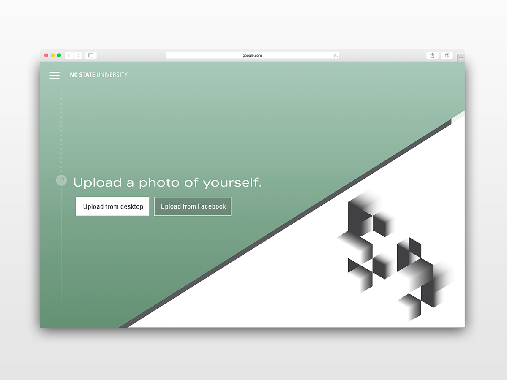
-
Step Four - Make it your own!
The final step asks users to upload a photo of themselves.
- 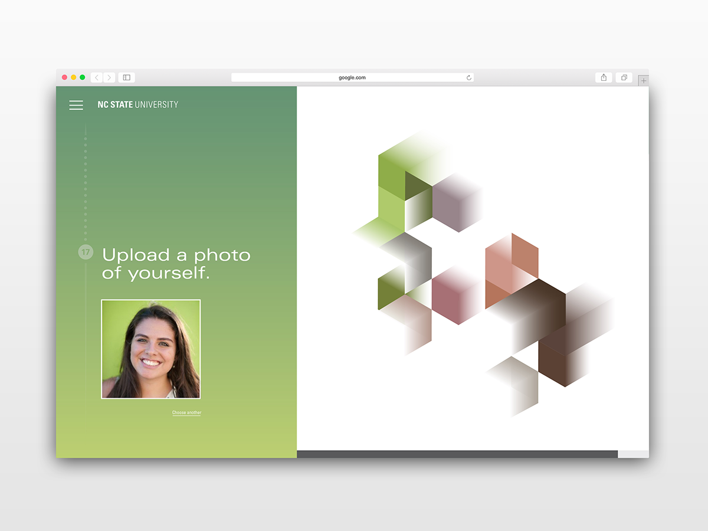
-
Step Five - Where the magic happens
The website samples colors from your uploaded photo, and uses them in your final, personal logo.
How it Works
We developed the generative "50" logo on an isometric grid, so as user input is received, the indivudal blocks can move by one unit along the grid. This establishes a consistent system and allows us to easily assign value to questions and answers.
We developed the generative "50" logo on an isometric grid, so as user input is received, the indivudal blocks can move by one unit along the grid. This establishes a consistent system and allows us to easily assign value to questions and answers.
Process
- 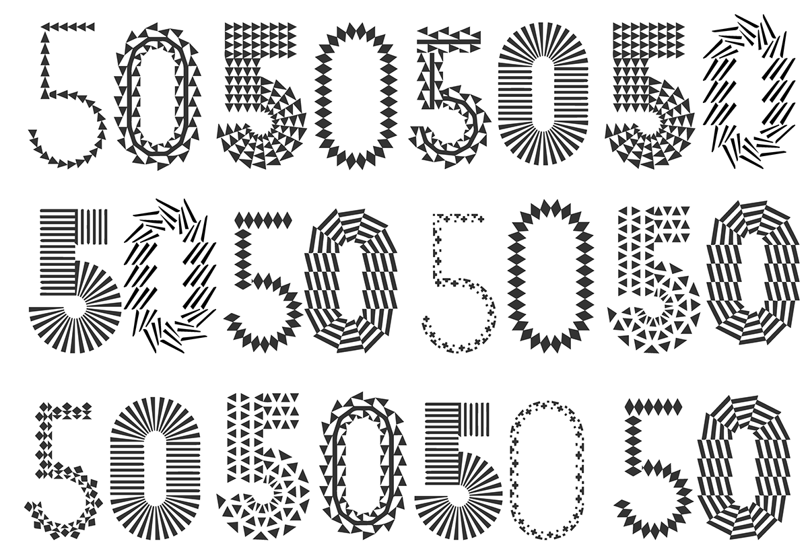
- 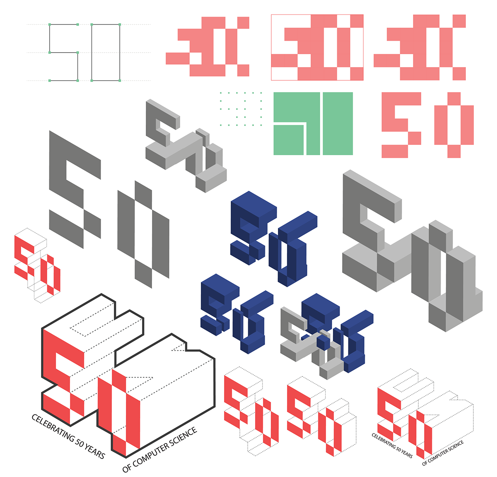
- 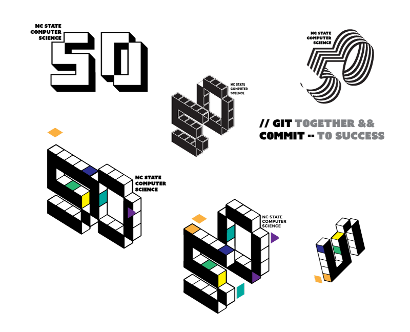
- 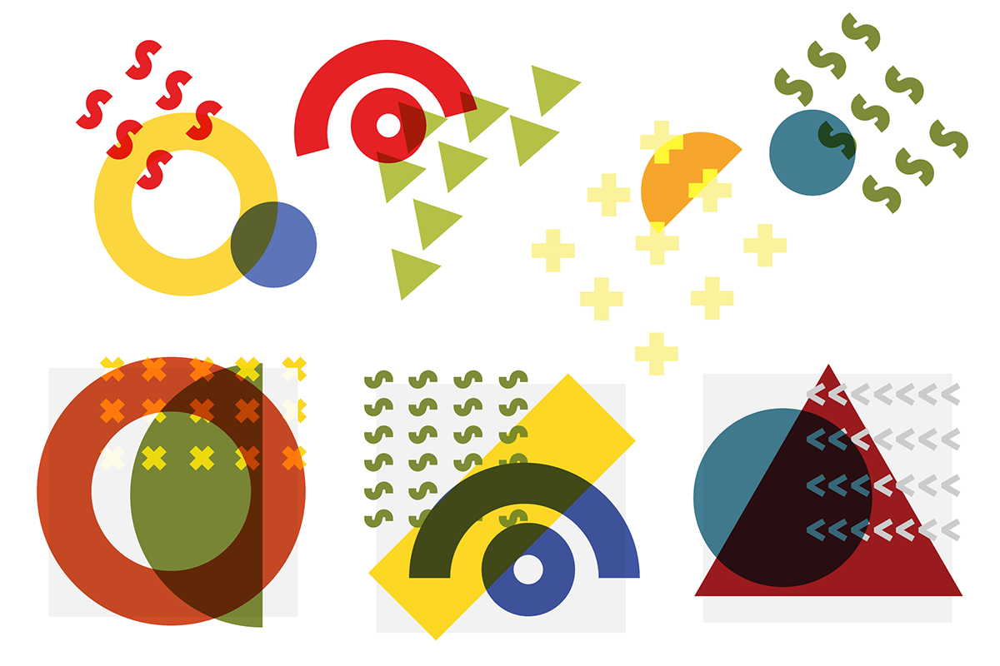
The Team
- 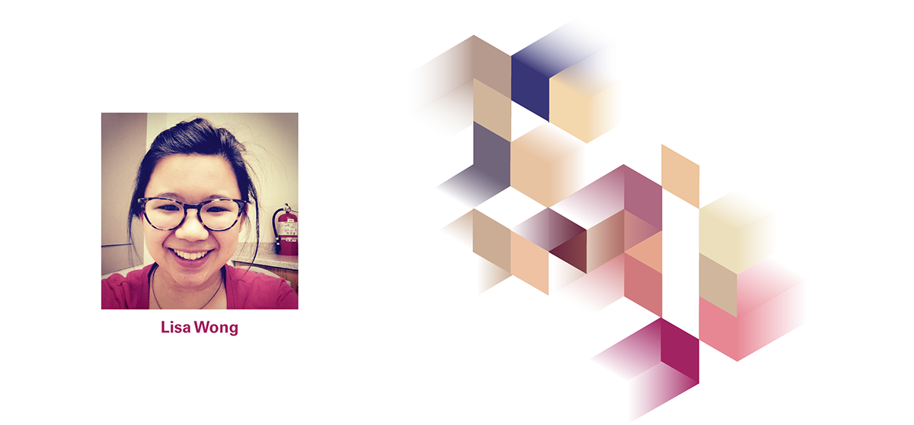